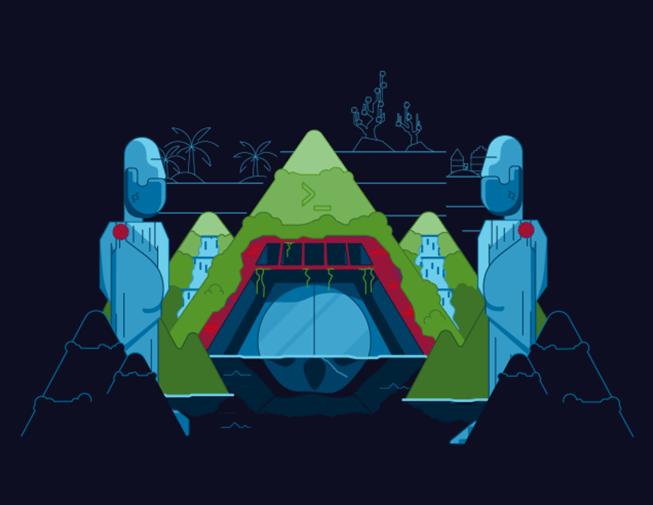

Subscribe to the podcast to receive new episodes as soon as we release them

C and UNIX are at the root of modern computing. Many of the languages we’ve covered this season are related to or at least influenced by C. But UNIX and C only happened because a few developers at Bell Labs created both as a skunkworks project.
Bell Labs was a mid-twentieth century center for innovation. Jon Gertner describes it as an “idea factory.” One of their biggest projects in the 1960s was helping build a time-sharing operating system called Multics. Dr. Joy Lisi Rankin explains the hype around time-sharing at the time—it was described as potentially making computing accessible as a public utility. Large teams devoted years of effort to build Multics—and it wasn’t what they had hoped for. Bell Labs officially moved away from time-sharing in 1969. But as Andrew Tanenbaum recounts, a small team of heroes pushed on anyways. C and UNIX were the result. Little did they know how much their work would shape the course of technology.
00:00 - Speaker 1
We are the beginning of a new wave of research. Our creative powers are being stretched.
00:10 - Speaker 2
Noise. Noise.
00:13 - Speaker 1
These men are design engineers at Bell Telephone Laboratories.
00:16 - Saron Yitbarek
In the 1960s, Bell Labs, in Murray Hill, New Jersey, was the epicenter of innovation, where our tech future took its first steps. There, they developed the laser. They developed the transistor. It was the cradle of information theory, and in 1968, all that innovation hit a new peak when a fellowship of four programmers produced something so groundbreaking that it fundamentally changed the way the world works.
00:53 - Saron Yitbarek
I'm Saron Yitbarek and this is Command Line Heroes, an original podcast from Red Hat. All season long, we've been tracking some of the biggest stories in programming languages, and we’ve finally arrived at our season finale. I think we saved the biggest story for the end. It's the story of a language that made just about all those other languages possible. Exactly 50 years ago, C was designed at Bell Labs, a general-purpose language so fundamental that we sometimes forget what a monumental achievement it really was.
01:35 - Saron Yitbarek
To get the full picture, we have to head back to the 1960s, just before the birth of C. It was a time when anything seemed possible.
01:46 - Jon Gertner
The 1960s, Bell Labs was really almost a kind of Shangri-La. It was an R&D lab that really doesn't have any kind of analog today.
01:56 - Saron Yitbarek
That's Jon Gertner, author of The Idea Factory: Bell Labs and the Great Age of American Innovation. We asked Jon to try and explain what was in the air. What was it about this place and time that made Bell Labs, in his words, an idea factory?
02:15 - Jon Gertner
I think today we're—sort of—of the belief that competition creates great innovations, but I'm not sure that's true, and Bell Labs' achievements actually kind of stand in contrast to that. These were scientists and engineers who had not a lot of pressure on them, but at the same time, Bell Labs, because of its hierarchical place amongst research laboratories, could really hire the very best and the very brightest and give them both time to work on problems that they found interesting and also a fair amount of funding. If you could make a good case that you had a research project that was relevant to the sort of ideal and the goal of the phone company, you could really fund your research.
03:00 - Saron Yitbarek
And Jon emphasizes, although Bell Labs was a product of this for-profit company, the ethos was closer to something academic. By letting employees run with their own ideas, Bell practiced similar open leadership principles to what you might find in open source communities.
03:19 - Jon Gertner
This was an era before Apple, before Google, before Microsoft, for instance. The history of computing often focuses on the kind of west-coast, Homebrew Computer Club sort of origins and what grew out of that. I think this was just as important. This was in, what would now seem to be, an unlikely place, which was suburban New Jersey. But these were scientists and researchers and computer engineers who were making tremendous breakthroughs that would really have significant, earth-shaking implications all over the world.
03:54 - Saron Yitbarek
One of those earth-shaking projects, one that was proving to be a huge challenge, was a little concept called time-sharing. Could they build an operating system that a hundred, even a thousand, users could be using all at once? That would be a game changer. Starting in 1964, the brainiacs at Bell Labs teamed up with General Electric and MIT to see if they could collectively push things toward this holy grail. MIT actually got the ball rolling a year earlier, with something called Project MAC, but soon, you had all these top teams pushing together to build a mainframe, time-sharing operating system.
04:40 - Saron Yitbarek
John McCarthy actually introduced the concept back in 1959. Check out our episode about AI, episode 7, for that story. He imagined a large machine that could switch its attention between multiple users. McCarthy figured such a machine would have the potential to wildly expand all computing culture. I mean, imagine it. If a thousand users can be working on one machine, you've democratized the whole world of programming, the whole world of computers. So, that group of heavyweights set out to make McCarthy's dream a reality, and they gave that imaginary operating system a name. They called it Multics.
05:23 - Saron Yitbarek
They worked on time-sharing for years, but the project was a huge money suck, and after a decade, the end wasn't even in sight. Making matters worse, their head of research, Bill Baker, was a chemist, who wasn't really interested in Bell's computer science department. And we can pile on one more problem: a problem of pride.
05:46 - Jon Gertner
One thing about Bell Labs that you see over and over again is that they, oftentimes, just worked on projects alone. I mean, there was a certain sense, within Bell Labs, that they had all the people they needed and all the ideas they needed and the best technologies, and if there was a problem worth solving, they could go at it. It may be the case, too, that Multics didn't work for Bell Labs, to some extent, too, because of this sort of larger, collaborative effort was not something that actually worked well within the Bell system or that satisfied the executives there.
06:20 - Saron Yitbarek
Jon Gertner is the author of The Idea Factory. His latest book is called The Ice at the End of the World.
06:32 - Saron Yitbarek
Bell Labs officially pulled out of the Multics project in April of 1969, so end of story, right? As far as Bell Labs was concerned, the time-sharing Multics dream was dead. Or was it? Turns out, not everybody at Bell Labs gave up on the quest for time-sharing. Four stubborn holdouts held onto the dream after everybody else had moved on, and that story is next.
07:08 - Saron Yitbarek
Some dreams, frankly, are too big to die.
07:12 - Joy Lisi Rankin
It was a big deal.
07:14 - Saron Yitbarek
That's Joy Lisi Rankin. She's the author of A People's History of Computing in the United States. Joy and I got talking about the dream of time-sharing and why it was too important to let go.
07:27 - Joy Lisi Rankin
It was a big deal, and it was quite ambitious, and up until that point or sort of when the project was launched, most of the time-sharing systems in the early 60s had maybe 40 or 50 terminals on a single mainframe. So, going up in order of magnitude was substantial, and perhaps more ambitious than anyone realized, so the project struggled in some ways to fulfill its initial goal, but nonetheless, time-sharing continued to live on in different forms and, indeed, to thrive; not just at MIT, but elsewhere.
08:09 - Saron Yitbarek
Yeah. So, when we talk about the 60s, who was driving the need for time-sharing? You mentioned MIT, GE, Bell Labs. So, are we talking about businesses? Are we talking about the academic community? Who's really driving it?
08:23 - Joy Lisi Rankin
I think the academic and business communities both, as well as sort of scientific communities were pushing, because it was really, as I mentioned, a more one-on-one, interactive experience of computing. But on the other hand, I would say educators were also pushing for it. And at a national level, there was a conversation about creating a nationwide computing utility. So, basically, a national time-sharing network, and really, sort of thought leaders in the United States also had this language around time-sharing that would be something that was comparable to electricity or phone or water service.
09:08 - Saron Yitbarek
Wow.
09:08 - Joy Lisi Rankin
Yes, I know! It's a -
09:09 - Saron Yitbarek
That's a big deal.
09:11 - Joy Lisi Rankin
It's a huge deal.
09:13 - Saron Yitbarek
Joy helped me remember that, while this episode is focused on the team that built C and UNIX, over at Bell Labs, the broader push for time-sharing was really a movement, something bigger than any one team. Really, it was a push to think of computing as a public utility, and it had so many heroes we can't get to here: people like Bob Albrecht and Martin Greenberger and lots of others.
09:37 - Saron Yitbarek
Okay, with that caveat, here's the rest of my chat with Joy.
09:41 - Joy Lisi Rankin
So, when John McCarthy first publicly talked about time-sharing at MIT in this speech he gave, he explicitly compared to electricity and said, "This is a way everyone can have computing, not just in universities and schools or businesses, but also in their homes." Going back and reading articles and documents from that time, no question in many people's minds that there would be a computing utility and that it would and could be regulated. So, there was a lot of faith and support for this sort of national time-sharing utility.
10:22 - Saron Yitbarek
So, what's interesting is that, by 1970, IBM actually pulled out of the time-sharing industry. Even GE, they sold their mainframe computer division, but they actually retained their time-share part of the business. Let's talk a little bit about that. What happened in 1970?
10:39 - Joy Lisi Rankin
I think 1970 has become sort of a marker of—maybe an artificial marker—the fall of the promise of computing utilities or the time-sharing industry. In some ways, it's false. I think sort of it was, by the late 60s, it was clear that MIT and Multics were struggling to sort of create this thousand or thousands of terminals time-sharing system, and it was a very public, prominent project. And at the same time, in the late 1960s, tens of time-sharing businesses sort of providing computing on this utility model had sprung up around the United States and were booming. It was a tech bubble. And then, the enthusiasm fell away; not completely because while GE sold its time-sharing sort of mainframe computer business, they retained their time-sharing as a utility business through the 1970s and 1980s, and it was profitable. And universities, like MIT, continued to run time-sharing systems, also, into the 1980s.
11:52 - Joy Lisi Rankin
So, there's, I think, a public memory that time-sharing was a tech bubble that just died out in the 1970s, partially because there was so much attention to Multics struggling. Yet, it actually, if we sort of go back and look at how people were using it and how profitable it was and how successful it was, it thrived through the 1970s.
12:17 - Saron Yitbarek
Now, back at Bell Labs, a group of four technologists wanted a time-sharing system of their own: Ken Thompson, Dennis Ritchie, Doug McIlroy, and J.F. Ossanna. But they didn't want Multics; they wanted to leapfrog toward something cleaner and more powerful, something they called UNIX.
12:39 - Joy Lisi Rankin
Multics was, I would say, the inspiration for UNIX, in the sense that some of the programmers who were working on Multics so enjoyed the benefits of programming on a time-sharing system that they wanted to create that environment for themselves, when it was clear that Multics was struggling. These were programmers at Bell Labs, and they decided to try to create their own programming framework and sort of time-sharing system, and that's what became UNIX.
13:20 - Saron Yitbarek
Joy Lisi Rankin is the author of A People's History of Computing in the United States.
13:29 - Saron Yitbarek
Dennis Ritchie would later describe him and the three other Bell Labs coworkers as a fellowship. The fellowship wanted to work as this tight quartet of developers, and they needed the hardware to accommodate their programming. But Bell Labs really had moved on from the time-sharing dream, and as much as Bell Labs could be a utopia for research, this was a case where they'd hit their limit, so they rejected proposals for that new hardware. It was just too pricey. Why take the risk? But the fellowship soldiered on.
14:05 - Saron Yitbarek
Thompson and Ritchie asked for a machine like the GE645, which they'd been using to work on Multics. When they couldn't get the funding for that, they just scribbled ideas about file systems on paper. Eventually, they managed to implement some of their ideas in a game they called "Space Travel," which ran on a PDP7. They kept on working with that PDP7, which was basically in the same class as a Commodore 64. Bit by bit with no backing from Bell, at least at first. That fellowship gave their time-sharing dream new life, in the form of something they called UNIX.
14:47 - Saron Yitbarek
But here's the thing: the UNIX operating system was being created in assembly language. I mean, these guys were transferring files to their PDP7 on paper tape, so you can imagine they're trying to build this groundbreaking thing with less than ideal tools and again, with no backing from the bosses. UNIX was coming to life, but it was still missing a language that would really let it sing.
15:23 - Saron Yitbarek
The first attempt at a new language for UNIX was something Ken Thompson wrote, called B.
15:30 - Andy Tanenbaum
Which was a derivative of BCPL (Basic Combined Programming Language).
15:33 - Saron Yitbarek
That's Andy Tanenbaum. He's a professor of computer science in Amsterdam, and the author of many books, including the classic Computer Networks. Just listen to his backstory on Thompson's B language.
15:48 - Saron Yitbarek
So, B's a derivative of BCPL?
15:51 - Andy Tanenbaum
Which was an attempt to make a CPL compiler, which would actually work, which was based on ALGOL 60, which of course, came from ALGOL 58, which was an attempt to do Fortran better.
16:01 - Saron Yitbarek
Got that straight? The point is B came with a lot of baggage. It wasn't much of a breakaway from all those predecessors, and as a result, it really wasn't up to the challenge of making UNIX sing. B didn't know datatypes, for starters, and besides, its assembly language counterparts were still yielding programs faster than was possible using the B compiler's threaded-code technique.
16:31 - Andy Tanenbaum
BCPL and B had only one datatype: the word. But words were great on the IBM 704 and 709 and 7090 and 7094, which were word-oriented machines. But starting with the 360 and all the mini computers, they were byte-oriented machines, and had only a single datatype. The word was not a good idea. It was a terrible match for modern computers. So, clearly, B wasn't going to hack it.
16:57 - Saron Yitbarek
So, all the machines the team had worked on before were word-oriented, but having things only oriented towards a single-size object, like Andy said, wasn't going to work. Luckily, at this point, the powers that be, at Bell Labs, came back on board, sensing that something exciting was happening here. They funded a $65,000 PDP-11, and that machine was not word-oriented. That machine was byte-oriented. Now, armed with the PDP11, Dennis Ritchie could step in and tackle their language problem head on.
17:36 - Andy Tanenbaum
Dennis, basically, with a little bit of input from Ken, decided to write a new language that was much more structured and had other types, such as character and INT and long, and so on.
17:47 - Saron Yitbarek
So, from 1971 to 1973, Dennis Ritchie is modifying the B language. He adds a character type and builds a new compiler so it doesn't have to use threaded code anymore. At the end of two years, B had transformed into a brand new language called C.
18:08 - Saron Yitbarek
C was this powerful hybrid. It had high-level functionality, but it also had detailed features that let users program operating systems. It hit a sweet spot. It was abstracted from the machine level just enough that it could be ported to other machines, too. Turns out that C was much more than a language for just messing around with applications. It was a nearly universal tool for programming; just as capable on a personal computer as it was on a supercomputer, and that mattered hugely because the personal computer revolution was just around the corner.
18:49 - Saron Yitbarek
Once it was clear that C was the way to go, the UNIX kernel was rewritten in C and so were a lot of its components. So, if you wanted to use UNIX, you were going to be using C. The success of C and the success of UNIX were tied together.
19:06 - Andy Tanenbaum
The reason that C caught on was not so much that it was a better language than B, which it was, but it was the language UNIX was written in, and when UNIX was widely distributed, it came with a C compiler and eventually came with two C compilers. And so, people who were using UNIX, and there were a lot of them after a while, all had a C compiler and everything in UNIX and all the utilities were all written in C. And C was a pretty good language, to boot, and since it came with UNIX, why look for something else?
19:33 - Saron Yitbarek
From there, the value of C only grew.
19:35 - Andy Tanenbaum
When C and UNIX were kind of codependent in the beginning because UNIX was written in C and it had a C compiler, and so, they sort of grew up together. At a certain point, C was popular enough on UNIX systems that Steve Johnson, for example, wrote the portable C compiler, which then could produce codes for other machines. And eventually, a C compiler was written for operating systems other than UNIX and people began writing all kinds of software, from database systems to heaven knows what, in C because it was available and it worked and it was efficient.
20:07 - Saron Yitbarek
So, soon enough, things that had nothing to do with UNIX were being written in C, because the merits of the language were obvious. Andy describes how total the C takeover was.
20:20 - Andy Tanenbaum
I mean, C was in the right place at the right time. In 1970s, computing was much smaller than it is now. The average person didn't have a computer, knew nothing about computers, but universities and big companies had computers and many of them had UNIX and C came with it, and so, they used C. And it just established a very large base of software, a large base of programmers. If a company wanted a C programmer, you could put out an ad and there would be C programmers available. If they wanted a programmer for B, nobody would apply.
20:49 - Saron Yitbarek
In the C world, there was infrastructure—software, libraries, headers, all these tools—and this created a virtuous circle.
20:59 - Andy Tanenbaum
So, it just became more and more popular.
21:02 - Saron Yitbarek
Now, the emergence of the internet would raise security concerns about C, and those are partway addressed in variants, like C sharp. It can feel, sometimes, like all the excitement is about newer languages like Python or Go. But one of the things we try to do on this podcast is remember how tied we are to our history, and the influence of C really is still incredible.
21:29 - Saron Yitbarek
One of the most obvious modern places where C makes its mark is in the godchild of UNIX: Linux®, which, yes, is very much written in C. Even the standard compiler for Linux projects, the GCC (GNU Compiler Collection), is written in C. It may not be obvious, but all those open source programmers out there today, jamming away on Linux, are tied to a language that was first built for them almost half a century ago, and the reign of C just grows with each passing year.
22:02 - Andy Tanenbaum
It turns out the two dominant operating systems in the world now are Android, which runs on Linux, which is a rewrite of UNIX, and iOS, which is a 4.4 Berkeley UNIX. And so, both Android and iOS are, in fact, UNIX. My suspicion is probably close to all the servers in the world run on some version of UNIX or Linux. It has a huge influence behind the scenes, and any system running UNIX is going to be oriented towards C and all the stuff written for that thing is going to be in C. It's really just everywhere.
22:41 - Saron Yitbarek
Andy Tanenbaum is a professor of computer science and the author of Computer Networks. Fun side note, he's also the creator of MINIX, a free, open source version of UNIX, which actually inspired Linus Torvalds to create Linux. And yep, Andy wrote MINIX in C.
23:03 - Saron Yitbarek
Today, C is in every corner of our lives, from rovers on Mars to the browsers of our desktops. It's gone on to influence a lot of the languages we looked at this season, languages like Go and JavaScript and Perl. And thanks to its deep bonds with UNIX, C may well be the most omnipresent language on Earth.
23:28 - Speaker 7
The recipients of the 1998 National Medal of Science Award: the team of Kenneth L. Thompson and Dennis M. Ritchie, from Bell Laboratories, Lucent Technology.
23:40 - Saron Yitbarek
Back in the 60s, those four Bell Labs employees—Ken Thompson, Dennis Ritchie, Doug McIlroy, and J.F. Ossanna—they had to beg for a little recognition and funding. But in 1998, Thompson and Ritchie received the National Medal of Science for their work on C and UNIX. They also shared the one million dollar Turing award. Not too shabby.
24:10 - Saron Yitbarek
All season long, we've been tracking the movements and magic of some of our favorite programming languages. Whether they got their start by hitching onto an OS, the way C did, or capitalized on new infrastructure, like Go did, one thing remains constant: languages have lives. They're born. They grow, mature. Sometimes, they grow old and die. The more we learn about them, the more it's clear that our programming languages are really these vital forces, always changing to match the times. Our job is to notice those changes and respond in kind. Our languages are often our best tools for building the world we want.
25:00 - Saron Yitbarek
That's it for season 3 of Command Line Heroes. I hope you enjoyed listening as much as we enjoyed putting it together. Season 4 is already in the works, and we'll be getting that out to you soon.
25:13 - Saron Yitbarek
Command Line Heroes is an original podcast from Red Hat.
25:18 - Saron Yitbarek
You can dive deeper into the story of C or any of the programming languages we covered this season if you head over to redhat.com/commandlineheroes. I'm Saron Yitbarek. Until next time, keep on coding.
Keep going
The monumental impact of C
The season finale of Command Line Heroes is a lesson in how a small community of open source enthusiasts can change the world.
UNIX/Linux and me
Revisiting our blog about the role of UNIX, Linux, and C in the life of a Red Hat developer.
Enjoy this episode's artwork on your device
Download the Command Line Heroes artwork and set it as your background.
{kind=link}
{kind=link}
{kind=link}

Get the newsletter
After each episode drops, we'll send you commentary from the Command Line Heroes team, as well as links that help you take a closer look at the topics we cover. It's as simple as that.
Presented by Red Hat
For 25 years, Red Hat has been bringing open source technologies to the enterprise. From the operating system to containers, we believe in building better technology together–and celebrating the unsung heroes who are remaking our world from the command line up.